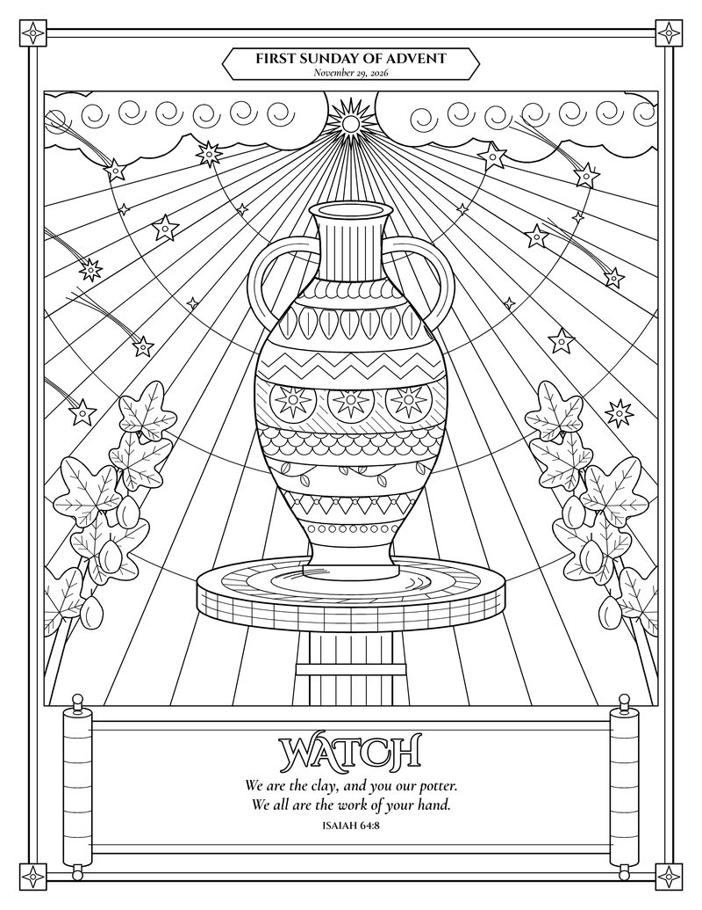

Resources · Free Advent sample
Free Advent sample: Clay on the Wheel
One full devotion and coloring page from An Advent & Christmas Coloring Book: Year B, 2026, for the First Sunday of Advent, November 29, 2026. Free to print for your household, Sunday school, or small group.
The free download goes through the Open Scroll shop (Payhip), which asks for your email address so it can send the file. You can also open the sample PDF directly.
The sample page
First Sunday of Advent · November 29, 2026
Clay on the Wheel
Readings: Isaiah 64:1–9 · Psalm 80:1–7, 17–19 · 1 Corinthians 1:3–9 · Mark 13:24–37
“We are the clay, and you our potter. We all are the work of your hand.” Isaiah 64:8, World English Bible, public domain.
Advent opens with a cry, not a carol. Isaiah pleads, “Oh that you would tear the heavens, that you would come down”. The prophet knows how it feels when God seems hidden. Then, in the middle of his lament, he turns: “But now, Yahweh, you are our Father. We are the clay, and you our potter.” Clay does not hurry the potter. It stays on the wheel, soft enough to be shaped. Jesus tells his friends to stay awake, like servants waiting for the owner of the house to come home at an hour nobody knows. Watching here does not mean anxiously checking the clock. It is attention, the way a potter notices every curve as a jar takes shape. As you color this page, slow down. Let each band of pattern be a prayer for one place where you long for God to come down. Paul reminds us, “God is faithful”. The hands that shaped you are still at work.
Prayer
Potter God, keep us soft in your hands and awake to your coming. Shape us for your purposes, and come quickly to a world that waits for you. Amen.
As you color
Where do you long for God to “tear the heavens” and come down this Advent?

What the full book includes
Five original coloring pages for adults, one for each Sunday of Advent 2026 and one for Christmas Day, each drawn from that day’s readings in the Revised Common Lectionary, Year B. Each page is followed by a devotion of about 150 words, a short prayer, and a reflection question.
- An Advent & Christmas Coloring Book: Year B, 2026 · $5
13-page US Letter PDF, an editable Word file, and five separate PNG coloring pages. Printing permission for personal, household, and congregational use.
- Little Lights of Advent · $5
Six short Advent wreath devotions for children, with a Bible verse and a coloring page in each.
- Advent Candle-Lighting Liturgy: WEB Edition · $7
A liturgy for lighting the Advent candles, with a confession and an assurance.
- All Open Scroll resources
Advent, Lent and Holy Week, worship dramas, and Bible studies.
Hear about new resources
Want a note when the Lent and Holy Week resources and new studies are ready? Choose the free download above and Payhip will have your email for that order.